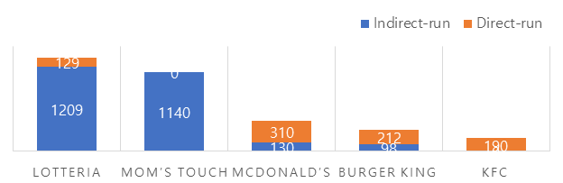
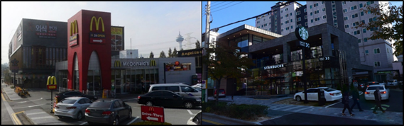

Divide paragraphs to review the situation for each current issue related to Operation Management, and discuss each specific issue’s pros and cons.
In 2018, McDonald's closed more than 20 stores in South Korea. Most of these are located in areas with large floating population. Traditionally McDonald's store has been located in large commercial districts such as shopping malls and around stations. But the selection of these location management has recently become company’s weakness because Increasing competition at field of fast foods and rising cost from store real estate rent.
To overcome this problem, McDonald's Korea actively closes its stores traditionally located and builds independent buildings outside of the city. It can be done with advantage of its high percentage of direct-run stores(figure1).
This strategy of location of store is based on high brand value. Located on the outsides of the city where is a lot of movement of vehicles, and it induce vehicle to “Drive thru” exploit big logo design and brand value. Unlike the U.S., this strategy has not been common in Korea before. This strategy that put “Drive thru” priority has a advantage can increasing store customer turnover. Also, this strategy can be seen not only McDonald's store but also large franchises such as Starbucks that have high brand value in Korea(figure2).
On the other hand, related on selection of location of McDonald’s store, New trend word “mac-se-kwon” is arisen from McDonald’s high brand value and increasing of single family. McDonald's location has become one of important issue about real estate-related that determine whether residents live or not. Such ability to attract customer can be advantage when consider a locational strategy.
McDonald's layout that include “production of food” and "Drive thru (DT)" is efficiently designed. For example, McDonald’s Yangsan mulgum DT store has such plane figure like figure3. Commonly McDonald's independent buildings have similar plan figure like.